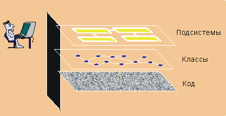

| Визуальное моделирование |
 |
|
| Связанные элементы |
|---|
|
 Визуальное моделирование увеличивает уровень абстракции Что такое визуальное моделирование?Визуальное моделирование представляет собой применение для фиксирования эскизов программного обеспечения нотаций с развитой семантикой, графикой и текстовым содержанием. Нотация, такая как UML, позволяет увеличить уровень абстракции, обеспечивая полноценный синтаксис и семантику. Таким образом она улучшает связь в коллективе, работающем над эскизом, поскольку эскиз формируется и просматривается, позволяя читающему размышлять над эскизом, и обеспечивает точно выраженную основу для реализации. Зачем создавать модель?Модель является упрощенным представлением системы. Она показывает существенные стороны системы с определенной точки зрения и скрывает несущественные детали. Модели могут оказать помощь следующим образом:
Содействие пониманию сложных системВажность моделей возрастает при увеличении сложности систем. Например, собачью конуру можно построить без моделирования. Однако при переходе к домам и далее к небоскребам потребность в моделировании становится четко выраженной. Аналогично, небольшое приложение, создаваемое одним разработчиком за несколько дней можно легко понять целиком. Однако систему электронной коммерции с десятками тысяч строк исходного кода - или систему управления схемой движения воздушного транспорта, содержащая сотни тысяч строк исходного кода - нелегко понять одному человеку. Создание моделей дает разработчику возможность сфокусироваться на основной картине, понять, как взаимодействуют компоненты, и идентифицировать фатальные ошибки. Некоторые примеры моделей:
Моделирование помогает коллективу визуализировать, сконструировать и документировать структуру и поведение системы, не затерявшись в ее сложности. Исследование и сравнение альтернативных вариантов эскиза с малыми затратамиДля исследования альтернативных вариантов эскиза можно с небольшими затратами создавать и изменять простые модели. Новые идеи можно зафиксировать и их могут изучить другие разработчики перед инвестированием в дорогостоящую разработку исходного кода. В сочетании с итерационной разработкой визуальное моделирование позволяет разработчикам оценить изменения в эскизе и сообщить об этих изменениях всему коллективу. Формирование основы для реализацииСегодня во многих проектах используются объектно-ориентированные языки программирования с целью создания многоразовых, допускающих изменения и устойчивых систем. Для получения этих преимуществ даже более важным является применение в эскизе объектной технологии. В Rational Unified Process (RUP) создается объектно-ориентированная модель проектируемой системы, которая является основой для реализации. При поддержке соответствующих инструментов эскиз можно использовать для создания начального набора исходного кода для реализации. Это называется "опережающее проектирование" или "генерация кода". Модели проектируемой системы также можно расширить, включив достаточно информации для построения системы. Обратное проектирование также можно использовать для создания моделей проектируемых систем на основе существующих реализаций. Это можно использовать для оценки существующих реализаций. "Проектирование в обоих направлениях" сочетает приемы опережающего и обратного проектирования, обеспечивая получение согласованного эскиза и кода. В сочетании с итерационным процессом и подходящими инструментами такое проектирование обеспечивает синхронизацию эскиза и кода в каждой итерации. Точная фиксация требованийПеред построением системы очень важно зафиксировать требования. Указание требований с помощью точной и однозначной модели позволяет гарантировать, что все заинтересованные лица понимают требования и согласны с ними. Модель, которая отделяет внутреннее поведение системы от ее реализации, позволяет сфокусироваться на предназначении системы, не вникая в детали реализации. Однозначная передача решенийВ RUP применяется Unified Modeling Language (UML) - согласованная нотация, которую можно использовать и для проектирования системы, и для бизнес-проектирования. Стандартная нотация выполняет следующие роли (см. [BOO95]):
UML объединяет лучшие технологии в моделировании программного обеспечения в индустрии объектных технологий. Дополнительная информация по UML приведена на Web-сайте по адресу http://www-306.ibm.com/software/rational/uml/. |
© Copyright IBM Corp. 1987, 2006. Все права защищены.. |